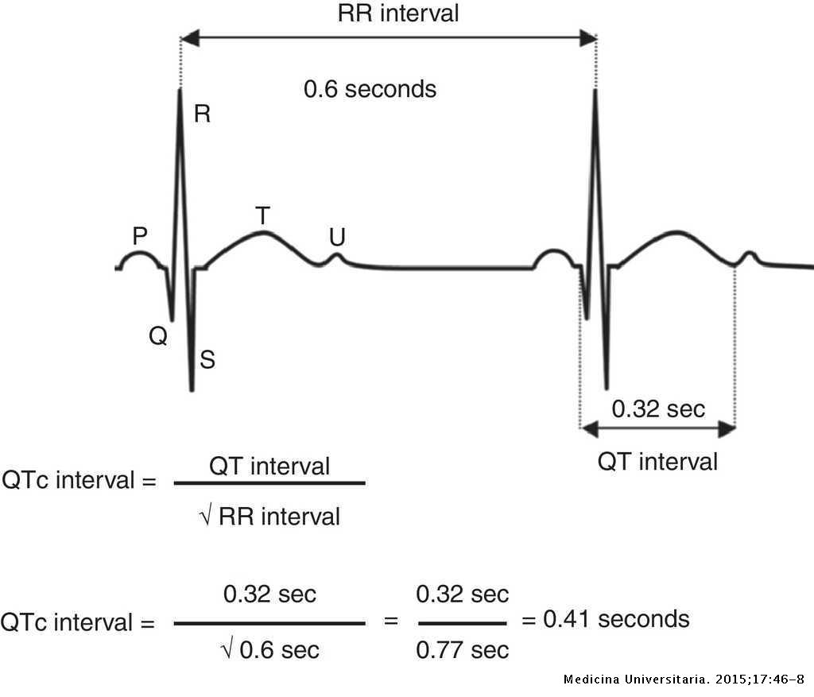
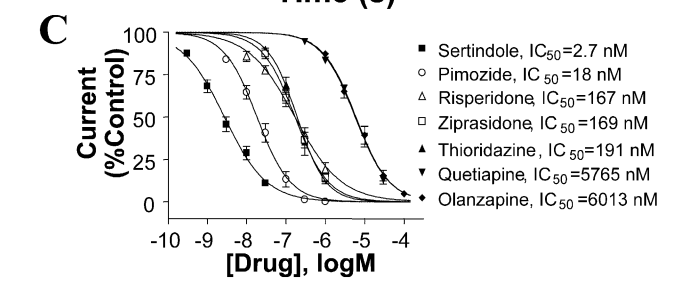
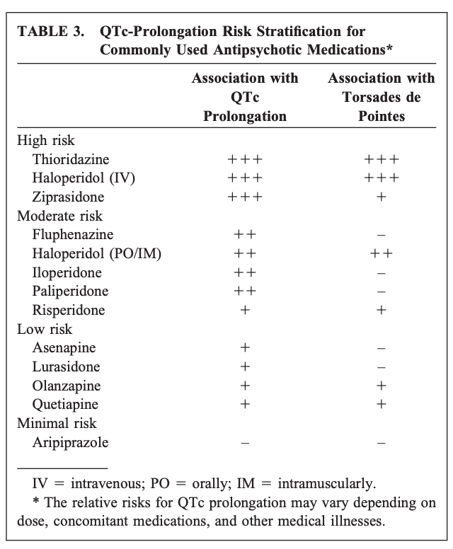

57 내분비, 심혈관계 부작용
57.1 내분비계 장애
57.1.1 갑상선 기능 이상
정신과에서 갑상선 기능이 중요시되는 것은 주로 리튬을 사용하고 있는 환자나 치료저항성 우울증 환자에 국한되지만, 항정신병 약물 역시 다양한 기전을 통해 HPT 축1에 영향을 미친다. Phenothiazine 계 약물을 포함한 정형 항정신병 약물은 대체로 TSH 농도를 올리며, 무증상적 갑상선 저하증을 유도한다.[1] 하지만 약물을 사용하지 않았던 환자라도 갑상선 기능 이상이 자주 보고되기 때문에, 약물의 영향을 정확히 구분해내기 어렵다. 급성 정신증 삽화에서는 약물 사용과 상관없이 갑상선 기능 이상과 자가면역 이상이 자주 발견되며, 대체로 TSH와 T3가 정상대조군보다 낮고, T4는 증가된 양상을 보인다.[2]갑상선 호르몬의 변화가 정신증의 원인은 아니겠지만, 갑상선 호르몬 수치는 조현병의 인지 증상 및 대사 부작용과도 연관이 있다고 한다.[3]
1 Hypothalamic-pituitary-thyroid (HPT) axis
항정신병 약물 중 갑상선에 가장 두드러진 영향을 미치는 약물은 phenothiazine 계 약물이다. 이들 약물은 갑상선 상피세포가 요오드를 함입하는 과정을 방해하며, 클로르프로마진과 같이 약물-요오드 결합력이 높은 약물은 한정된 요오드를 두고 정상 세포와 경쟁하기 때문에, 의원성 (iatrogenic) 갑상선 저하증을 유도한다.[4] 한편 이들 약물은 갑상선 세포에 MHC class II 항원을 발현시키기 때문에, 자가 항체가 이 항원을 인식하면 갑상선 세포를 직접 공격한다.[5] 한편 phenothiazine 계 약물은 α 수용체 차단에 의해 TRH에 대한 TSH의 반응을 감소시킨다.[6] 이런 양면적인 효과때문에 정작 TSH 농도는 올라가기도 내려가기도 한다.[7]
결절누두 경로를 통한 D2 차단은 갑상선 기능에 영향을 미칠 수 있다. 무증상이라도 갑상선 기능 저하 환자에서 고프로락틴혈증이 발견될 확률이 높으며, 이들에서는 TSH와 프로락틴 농도 사이에 양의 상관관계를 발견할 수 있다.[8] 프로락틴이 직접 TSH에 영향을 끼치는 지는 알 수 없지만, D2 차단에 의해 뇌하수체 분비 호르몬들의 조절 기전이 혼란에 빠지는 것은 분명하다. 한편 고프로락틴혈증 환자에게서 갑상선 자가 항체가 발견될 확률도 높기 때문에[9], 혈중 프로락틴 수치가 높은 환자라면 갑상선 기능을 규칙적으로 모니터링하는 것이 권장된다.[7]
비정형 약물의 효과는 더욱 중구남방이다. D2를 강력히 차단하는 아미설프라이드는 TSH를 상승시키지만[1,10], 차단력이 낮은 클로자핀은 오히려 TSH를 낮추는 효과를 보인다.[11] 퀘티아핀, 올란자핀도 free T4를 감소시키는 등 갑상선 기능 저하를 유발하며[12], 환자들이 보고하는 체중 증가는 낮은 혈중 T4와 관련이 있었다.[13]
57.1.2 다음증과 물 중독
1923년 Rowntree2가 만성 조현병 환자의 수분 대사 이상에 대해 최초로 보고한 이후[14], 만성 정신 병동에서 다음증과 물 중독을 보이는 사례는 심심치 않게 발견되었다. 원래 당뇨병 환자에서 흔히 발견되는 다음증은 비정상적인 항이뇨 호르몬(antidiuretic hormone, ADH) 분비때문에 발생하지만, 조현병 환자에서의 다음증은 ADH만으로 설명이 되지 않는다. 대부분은 다음증과 다뇨증 단계에 그쳐 큰 문제가 없지만, 20~30%의 환자들은 소위 물 중독(water intoxication)으로 인한 저나트륨혈증에 빠져 의식상태가 혼미해지고 경련을 일으켜 생명이 위험해질 수도 있다.[15,16] 다음증으로 발생한 저나트륨혈증은 행동 치료를 통해 수분섭취를 제한하면 대부분 호전되며, 클로자핀 등 비정형 항정신병 약물로 바꾸면 좀더 나아지기도 한다.
2 Leonard Rowntree (1883~1959): 캐나다의 내과 의사로 신장 기능 연구에 기여하였다. 그는 신장투석의 개념을 처음 개발한 것으로도 알려져 있다.
57.1.2.1 원인
항정신병 약물이 왜 다음증과 물 중독을 일으키는 지는 알려져 있지 않다. 단순히 조현병 증상이나 오랜 입원 생활로 인한 스트레스를 물을 마셔 달랜다는 설명도 있고, 약물의 항콜린 효과로 갈증이 심화된 상태에서 ADH가 부적절하게 과다 분비되기 때문이라고도 한다.[17] 하지만 다음증을 보이는 환자들이 대체로 만성 환자들이고, 강박적인 수준으로 물을 마시면서도 판단력이 떨어져 그것이 문제라고 인식하지 못하기 때문에, 단순히 갈증이 원인이라고 치부하기도 어렵다. 마찬가지로 조현병 뿐 아니라 자폐증을 비롯한 발달장애 환자에서도 다음증이 자주 발견되며, 드물기는 하지만 양극성 장애, 정신병적 우울증 상태에서도 동반될 수 있다.
일부 학자들은 정형 약물과의 관련성을 들어 D2 수용체의 초과민성(supersensitivity)으로 도파민 활성이 오히려 상승되면, 시상하부의 갈증 중추를 자극한다고 생각한다. 즉 지연성 운동장애와 유사한 기전으로 이해하는 것이다.[18,19] 게다가 정형 항정신병 약물, 특히 할로페리돌은 SIADH3를 일으켜 다음증이 없이도 저나트륨혈증을 일으킬 수 있다.[20,21]
3 Syndrome of inappropriate secretion of antidiuretic hormone (SIADH)
다음증과 물 중독은 일단은 서로 구분되는 현상이다. 갈증 센터의 자극때문에 일차성 다음증(primary polydipsia)이 발생했다고 해도, 정상적인 상태의 신장은 수분을 하루에 최대 12L까지 배출할 수 있다.[22] 또한 수분 섭취가 늘어나면 자연히 ADH 분비가 줄어들면서 묽은 소변을 배출하게 된다. 다만 수분 섭취량이 신장의 역량을 초과하거나, 신장에 문제가 있어 제대로 수분을 배출하지 못할 때, 혹은 SIADH로 수분 대사가 혼란에 빠질 때 물 중독 상태로 이어지게 된다. 조현병 자체가 문제인지 항정신병 약물 때문인지는 확실하지 않지만, 물 중독에 이르는 환자들은 ADH가 분비되기 시작하는 혈장 삼투압이 상대적으로 낮게 맞춰져 있기 때문에[15], 수분이 과다한 상태에서도 ADH가 분비된다. 더군다나 급성 정신병적 증상이 악화되면 ADH 분비가 자극되는 경향이 있기 때문에 상황을 더욱 악화시킨다.[23]
최근에는 건강 칼럼등을 통해 충분한 수분섭취가 건강에 좋다고 지나치게 홍보된 나머지, 건강염려증적으로 수분 섭취에 매달리는 환자들이 생겼다. 처음에는 의식적으로 물을 과다섭취하지만, 시간이 지나면 갈증에 대한 역치 자체가 변화하기 때문에 점점 더 물을 더 먹게 된다.
57.1.2.2 임상양상과 진단
만약 다음증이 급성 저나트륨혈증으로 이어지면 현저한 신경학적 증상이 나타난다. 처음에는 구역/구토와 운동실조증 (ataxia)이 생기며, 기면, 혼돈 등 의식변화가 뒤따른다. 편집성 공격성이 악화되어 급성 삽화처럼 보일 수도 있다. 그러다가 갑자기 발작을 일으키며 혼수 상태에 빠지기도 한다. 일부에서는 횡문근융해증이 발생하여 가뜩이나 손상된 신장 기능을 더욱 망가뜨린다. 이 상태에서는 혈중 나트륨 농도, 혈장 및 소변 삼투압을 확인하는 것만으로도 진단이 가능하다.
하지만 이렇게 현저한 증상을 보이지 않는다면, 오랫동안 다음증을 앓아왔으면서도 발견이 안 될 수 있다. 이들은 만성 물 중독과 저나트륨혈증에 빠지게 되는데, 두드러진 증상은 없지만 집중력과 학습 능력이 떨어지며, 초조해지고 자극 과민해지기 때문에 기존의 정신 증상과 구별이 어려울 수 있다.
이들을 찾아내기 위해서는 주의 깊은 관찰이 필요하다. 환자들은 대개 물 마시는 것을 숨기지만, 하루 종일 컵을 들고 다니거나, 음수대 혹은 정수기 옆을 떠나지 못하는 환자를 주의깊게 살펴보는 것이 요령이다. 물 중독 환자들이 특히 겨울에 수분 섭취로 낮아진 체온을 보충하기 위해 난방기 주변으로 모여드는 행동(afternoon radiator sitting syndrome)이 단서가 되기도 한다.[24] 또한 하루에 2kg이상 체중에 변동이 있는 것도, 부종의 다른 원인이 있지 않는 한 물 중독의 증거가 되기도 한다. 좀더 정교하게는 normalized diurnal weight gain (NDWG)4을 계산하여[25], NDWG가 4% 이상이면 물 중독을 의심해본다.[25] 만약 의심이 되는 환자라면, 오후 늦게 혈액/소변 검사를 함으로써 저나트륨혈증을 진단할 수 있다.
4 Normalized diurnal weight gain: NDWG = (오후 4시 체중 - 오전 7시 체중)/오전 7시 체중 x 100(%)로 계산된다.
57.1.2.3 치료
급성 물중독의 치료는 수분 섭취를 제한하고, 자연스레 수분 배설을 유도하는 것이다. 경우에 따라서는 furosemide (Lasix®)와 같은 루프 이뇨제5를 사용한다. 만약 혈중 나트륨 농도가 120mEq/L 이하이거나, 신경학적 증상이 보인다면 고농도 생리식염수(3%)를 정맥주사하여 나트륨을 보충한다. 하지만 너무 급격히 삼투압이 보정되면 뇌교 중심부 수초용해증6이 발생할 수 있음을 명심해야 한다. 하지만 이 정도로 중한 환자는 정신과 의사가 아니라 신장내과 전문의가 돌보는 것이 바람직하다.
5 루프 이뇨제 (loop diuretics): Loop of Henle의 상행각(ascending limb)에 작용하는 이뇨제로 효과가 확실하고 빨리 작용해서 긴급한 상황에 많이 쓰인다. 하지만 고용량을 오래 사용하면 청각손상을 일으키며, 용량이 과다하면 탈수를 일으키고 저나트륨혈증을 악화시킬 수 있다.
6 뇌교 중심부 수초용해증 (central pontine myelinolysis): 나트륨 농도가 갑자기 상승하면 급격한 삼투압 변화 때문에 신경세포 속의 수분이 외부로 빠져나간다. 특히 교뇌(pons)의 미엘린 수초가 파괴되면서 신경세포가 기능을 제대로 발휘하지 못하게 된다. 환자는 나트륨 교정 2~3일 후부터 의식 저하, 사지 마비, 가성 연수 마비(pseudobulbar palsy)를 일으킨다.
급성 상황이 아닌 만성 물 중독 환자의 첫번째 치료는 행동 요법을 통해 수분 섭취량을 제한하는 것이다. 이는 가정에서보다는 입원 상황에서 행해진다. 교육과 함께 음수대/정수기에 접근하지 못하도록 하며, 의료진이 보는 앞에서만 물을 먹도록 한다. 이는 식이장애 환자의 치료와 흡사한데, 환자의 순응도가 떨어지면 성공하기 어렵다. 심한 경우에는 안정실이나 독방에 격리하여 수분 섭취를 차단할 수도 있다.
항정신병 약물이 원인이라고 판단되면 항콜린 작용이 낮은 약물로 교체한다. 사용 중이었던 약물이 항콜린 효과가 크지 않은 약물이라면, 물 중독때문에 용량을 낮추는 것보다는 오히려 높이는 것이 치료에 도움이 된다. 이외의 약물 치료라면 1) 클로자핀이나 2) ADH 길항제를 사용할 수 있다. 현재까지 이중맹검 위약 대조군 연구가 행해지지는 않았지만, 많은 연구자들이 클로자핀이 물중독의 위험을 낮춘다고 보고하였다.[26,27] 메커니즘은 불분명하지만, 항콜린 효과에도 불구하고 클로자핀은 강박적으로 수분 섭취에 매달리는 것을 억제한다. 이러한 목적으로는 기존 항정신병 약물에 최대 100mg/day의 클로자핀을 추가하는 것이 도움이 되며, 더 높은 용량이 효과적이라는 증거는 없다.
과거에는 ADH 길항제인 demeclocycline을 사용하기도 했으나[28], 새롭게 vaptan 계열7의 ADH 경쟁적 길항제가 도입되면서 더 이상 사용되지 않는다. Vaptan 계열 약물인 tolvaptan이 이중 맹검 연구에서 물 중독을 치료하는 효과가 입증되었다. 혈중 나트륨 농도에 따라 15~60mg/day의 tolvaptan을 투여하였을 때, 투여 후 24시간 내에 혈중 나트륨 농도가 정상화되었다. 약물의 효과는 치료기간 내내 유지 되었으나, 문제는 투약을 중단하면 이전의 저나트륨혈증 상태로 돌아온다는 것이었다.[29,30]
7 Vaptan 계열 약물: 항이뇨 호르몬(ADH, vasopressin) 수용체인 V1A,1B,2를 차단하여 수분 배출(aquaresis)을 돕는다. 물 중독에 의한 저나트륨혈증뿐 아니라 간경화, 심부전, 다낭성 신질환 등의 부종 치료에 이용된다. Conivaptan, tolvaptan, lixivaptan, satavaptan 등의 약물이 있다.
57.2 심혈관계 부작용
57.2.1 조현병과 심혈관 기능
심혈관 기능은 대체로 자율 신경계에 의해 제어된다. 그런데 일찌기 크레펠린은 조현병 환자들이 빈맥, 동공 확장, 발한, 타액 분비, 체온 변화 등 다양한 자율신경계 이상을 보인다는 것을 지적하였다.[31] 이후의 연구자들도 조현병 환자들이 심장 질환, 특히 돌연사(sudden cardiac death, SCD)의 위험이 높다는 데 주목하였다. 이렇게 위험이 상승된 것은 약물에 노출되지 않은 환자 뿐 아니라, 환자의 가까운 친족에게도 공통적으로 나타난다.[32] 조현병 환자들은 대체로 교감 신경계가 항진되고, 부교감 신경계가 위축되어 빈맥이 있는 경우가 많다. 심박변이도(heart rate variability, HRV)로 측정해보았을 때에도, 교감/부교감 균형이 깨져 있는 것이 반복적으로 관찰된다.[33] 이러한 불균형을 심혈관 자율신경계 기능부전(cardiac autonomic dysfunction, CADF)이라고도 한다.[31,34]
항정신병 약물을 사용하기 전에도 이미 심장의 자율신경계가 혼란 상태에 놓여 있는 상황에서, 약물을 사용하면 위험이 좀더 상승한다. 항정신병 약물은 아드레날린성 및 콜린성 수용체를 통해 중추의 자율 신경 및 말초의 압력 수용기에 영향을 미친다.[35,36] 예를 들어 α1 아드레날린 수용체를 차단하면 일단은 혈관벽의 평활근이 이완되어 혈압이 떨어지며, 기립성 저혈압을 일으키기도 한다. 그러나 오랫동안 α1 수용체가 차단되면 보상적으로 아드레날린 활성이 증가하여, 혈압을 높이고 맥박수를 증가시킨다. 여기에 항콜린 효과까지 가세하니 더더욱 안정된 심박수를 유지하기 어렵게 된다. 게다가 비정형 약물은 체중 증가, 인슐린 저항성 등 심혈관 질환의 위험 요소를 수반하므로, 대사 증후군을 앓고 있는 환자에게 자율신경계 혼란까지 중첩되면 현실적인 문제가 될 수 밖에 없다.[37]
57.2.2 돌연사
조현병 환자의 돌연사(SCD)는 종종 접하게 되는 문제이다.[38] 이에 대한 설명으로 불건전한 생활 습관, 운동 부족, 흡연, 미흡한 영양섭취 등 여러가지 요인이 거론되어 왔으나, 그중 일부는 약물이 원인이었을 수도 있다. Salvo 등[39]이 행한 메타 분석에서, 각종 항정신병 약물을 복용하던 환자가 SCD로 사망할 위험은 thioridazine이 가장 높아 오즈비가 4.58이었으며, 그 뒤를 클로자핀(OR=3.67), 할로페리돌(OR=2.97), 리스페리돈(OR=3,04), 올란자핀(OR=2.04), 퀘티아핀(OR=1.72)이 뒤따르고 있었다. 이처럼 일부 약물은 특별히 심혈관계 부작용의 빈도가 높은 것 같으며, thioridazine의 오즈비가 높다는 것은 QTc 연장에 의한 돌연사가 포함되어 있었음을 시사한다.[40] 하지만 이렇게 계산된 오즈비(OR)를 전적으로 약물의 영향으로 돌리는 것은 성급한 결론이다. 조현병 환자들은 꼭 심혈관 질환이 아니더라도 돌연사 가능성이 높다. 실제로 100여건 이상의 돌연사 사례에서 자살/타살에 의한 사례를 제외했을 때, 주요 사인은 급성 심근경색증 외에도 상기도 폐쇄, 폐색전, 혈전성 뇌졸중 등이었으며, 부정맥에 의한 급성 심정지는 극히 드물었다.[41]
다행스럽게도 정신과 의사 입장에서, 자신이 담당한 환자가 심장병으로 돌연사하는 경우를 접하는 일은 일생에 한번 있을까 말까이다. 유럽에서 집계된 바에 의하면, 항정신병 약물 치료 중 심각한 심장 질환이 발생한 비율은 불과 0.13%에 불과하였다.[42] 약물을 사용하지 않은 환자들도 CADF 상태에 빠져 있으며, CADF의 심각도는 양성 증상과 비례관계에 있다.[43] 이는 비특이적 스트레스 정도에 따라 환자의 심장 상태가 변화한다는 뜻이다. 그렇다면 항정신병 약물에 의한 성공적인 치료는 오히려 심혈관 자율신경계의 안정을 되찾는데 도움을 줄 수도 있을 것이다.
항정신병 약물이 원인인지, 아니면 병 자체 혹은 전락한 생활환경이 원인인지 구분하기는 곤란하지만, 조현병 환자들이 유달리 높은 심혈관계 질환 위험에 노출되어 있음을 기억하는 것이 중요하다. 효과적인 치료를 통해 이들의 스트레스를 낮추고, 생활습관 교정을 통해 환경적 위험인자를 줄이며, 심장에 가장 부담이 적은 약물을 선택하는 등 다면적인 노력을 통해, 환자들의 기대수명이 짧아지는 사태를 막는 것이 의사들의 사명이다.
57.2.3 기립성 저혈압
앞에서 언급했듯이 α1 아드레날린 수용체 차단 효과가 강한 약물은 기립성 저혈압의 위험이 크다. 꼭 자세를 바꾸지 않더라도, 일부 약물은 혈압을 떨어뜨리는 효과가 있다. 건강한 지원자에게 클로자핀 50mg을 일회 투여하면 약 8.7mmHg의 혈압이 떨어진다.[44] 혈압 하강 효과는 α1 수용체 차단 효과와 거의 비례하기 때문에, α1 수용체 차단이 기립성 저혈압의 원인이라는 것은 분명해보인다.[36]
기립성 저혈압8은 항정신병 약물을 처방받는 환자의 약 40%에서 나타나는, 흔한 부작용 중 하나이다.[45] 이는 압력 수용기(baroreceptor)로부터 신호를 전달받은 교감신경계가 얼마나 신속하게 하지 정맥을 수축시켜 혈액을 머리 쪽으로 보내느냐와 관계있다. 젊은 성인에서는 약간 어지럽더라도 별 문제가 되지 않지만, 노인 환자에서는 낙상의 가장 큰 위험요인이다. 약물 투여 초기, 용량 적정 과정에서 집중적으로 발생하는데, 젊은 환자들조차 순간적인 현기증과 어지러움9때문에 약물에 대해 불쾌감을 토로하기 쉽상이다. 이는 α1,2 수용체 차단 효과와 관련이 깊다.[46]
8 기립성 저혈압 (orthostatic hypotension): 충분한 시간 누워있어 안정된 혈압을 보이는 환자를 즉시 일어나게 했을 때, 3분 이내에 수축기 혈압이 20mmHg, 이완기 혈압이 10mmHg이상 떨어지면 기립성 저혈압이라고 한다.
9 어지러움 (dizziness): “어지럽다”는 표현은 1) 현기(lightheadedness)와 2) 현훈(vertigo)을 모두 가리킨다. 전자는 기립성 저혈압과 연관이 있지만, 후자는 전정기관의 이상 때문이다. 현기증이 심해 쓰러지는 것은 졸도(실신, syncope)라 하는데, 이는 기립성 저혈압말고도 미주신경성 실신을 감별해야 한다.
기립성 저혈압을 예방하려면 치료 초기에 천천히 증량하며, 정형 약물 보다는 비정형 약물을 선택한다. 하지만 클로자핀과 리스페리돈, 일로페리돈돈은 유난히 위험이 높다는 것을 염두에 두어야 한다.10 문헌에서는 기립성 저혈압이 심하면 midodrine과 fludrocortisone을 사용할 수 있다고 되어있다. 전자는 직접 α1 수용체를 자극하여 혈압을 올리며, 후자는 수분을 재흡수하여 혈장량을 늘임으로써 혈압을 높인다. 그러나 대체로 자세 변경 시 조심하라고 교육하는 것만으로 충분할 때가 많다.
10 클로자핀은 비정형 약물 중 기립성 저혈압을 일으킬 위험이 가장 높은데, α1A /D2 수용체 친화도 비가 무려 156에 달한다.
57.2.4 QTc 연장
심전도에서 QT 구간은 심실이 한번 수축했다가, 다시 이완되어 다음 수축을 준비하기까지 걸리는 시간을 가리킨다. QT 구간은 심박이 느려지면 자연히 길어지므로 생리적 의미를 지니기 어렵다. 따라서 심박수를 보정한 QTc 구간11을 주로 사용한다. QTc는 심장이 재충전할 때 걸리는 시간이라는 뜻이므로, 이 구간이 길어진다는 것은 심장이 새로운 환경에 민첩하게 대응하지 못한다는 뜻이다. 재충전이 늦어지는 상태에서 다음 수축을 알리는 전기적 신호가 떨어지면, 심근이 제대로 수축하지 못하여 전체적인 리듬이 흐트러지게 되는데, 이 현상이 심해지면 Torsade de Pointes (TdP)12와 같은 부정맥이 발생한다.
11 QTc (QT corrected): QTc를 구하는 것은 두 가지 방법이 있다. Bazett의 공식은 QTc=QT/√RR-interval이며, Hodge의 공식은 QTc= QT x 1.75 x (HR-60)이다. 대부분의 문헌에서는 Bazett의 공식을 사용하고 있다.
12 Torsade de Pointes (TdP): QTc가 점점 길어지면 재충전 와중에 다음 수축 신호가 떨어지면서 T파 위에 R파가 겹치는 R-on-T 현상이 발생한다. 이 상태가 심해지면 QTS가 뒤틀리게 되는 특징적인 파형의 부정맥이 발생하는데, 이를 Torsade de Pointes (twisting of peaks의 불어표현)라고 한다.

다양한 약물이 QTc를 연장시키고, 이중 몇몇 약물은 부정맥 위험때문에 허가가 취소되기도 하였다. 항정신병 약물 중에서도 1990년대 중반에 사용되기 시작한 sertindole이 QTc 연장과 돌연사 위험때문에 허가가 취소되었다. 나머지 약물들도 역시 QTc 연장 효과가 있지만, 위험이 과장되게 포장된 경향이 있으며, 실제로 부정맥을 일으킬 위험은 그리 높지 않다.
정형 약물 중에서는 저역가 약물인 클로르프로마진과 thioridazine이 유독 QTc 연장 효과가 크다. 예를 들어 신체적으로 건강한 조현병 환자에게 할로페리돌 15mg/day를 투여했을 때 QTc가 7.1msec 늘어난 반면 thioridazine 300mg/day를 투여했을 때 30msec가 늘어났다.[47] 그러나 저역가 약물만이 위험한 것은 아니다. Pimozide는 대표적인 고역가 약물임에도 불구하고 QTc 연장과 Torsade de Pointes 위험이 높다.[48]
약물의 QTc 연장 효과는 hERG13 채널에 대한 결합력에 따라 결정된다. 한 연구에 따르면 항정신병 약물의 hERG에 대한 친화도는 약물에 따라 수천배 차이가 난다. 예를 들어 sertindole은 IC5014이 2.7nM인데 비해, 올란자핀은 6,013nM에 달한다.[49] 유효 농도에서의 약물 농도를 IC50으로 나눈 값은, 각 약물의 QTc 연장 위험과 역비례한다. 하지만 QTc 연장은 신체 상태에 크게 영향을 받기 때문에, 실제 심장 부작용의 빈도와 hERG 결합력 간에는 차이가 있다. 예를 들어 할로페리돌은 고역가 약물인데다가 hERG 결합력이 높은 편이 아니지만, 워낙 중환자실에 입원한 섬망 환자에게 많이 쓰이다보니 부정맥을 일으킨 빈도도 높은 편이다.[50] 특히 정맥 주사로 투여된 할로페리돌은 QTc 연장의 위험이 높아, 미국 FDA는 할로페리돌 정맥 주사를 사용하는 모든 환자는 심전도를 점검할 것을 권고하였다.[51]
13 hERG: the human Ether-à-go-go-Related Gene (혹은 KCNH2 gene). hERG는 칼륨 채널의 α 아단위를 코딩한다. 문헌에서는 이 칼륨 채널을 IKr 채널이라고도 하는데, 심근의 재분극을 담당한다.
14 IC50 (half-maximal inhibitory concentration): 어떤 화합물/약물이 목적한 생물학적 기능의 50%를 차단하는 농도


비정형 약물 역시 QTc 연장과 돌연사 위험에서 자유롭지 못하다. 그 중에서도 특히 지프라시돈의 QTc 연장 효과15가 우려를 자아냈는데, 그렇다 하더라도 실제 임상에서 QTc를 일일이 고려할 필요는 없어보인다. 지프라시돈 과다복용으로 응급실에 실려온 56명의 환자 중 QTc가 500msec 이상으로 연장되었던 환자는 단 한명에 지나지 않았다.[53] 지프라시돈 복용 후 TdP를 일으킨 사례보고도 전세계적으로 손꼽을 정도이다. 이런 사실은 QTc가 연장되었다고 해서 곧바로 돌연사 위험으로 연결되는 것이 아님을 시사한다. QTc가 연장되어 있으면서도 부정맥을 비롯한 심장 부작용이 전혀 없을 수도 있고, QTc가 정상인데도 돌연사 할 수 있다. 예를 들어 클로자핀은 QTc 연장 효과가 크지 않음에도 불구하고, 돌연사 위험은 가장 높다.[54,55]
15 지프라시돈과 QTc 연장: 초기 임상 시험에서부터 지프라시돈은 QTc 간격을 용량 의존적으로 증가시키는 것으로 나타났다. 미국 FDA의 요청으로 이루어진 심사에서 지프라시돈은 평균 20.3msec 연장시켰으며, 이에 비해 thioridazine은 35.6msec, 퀘타이판은 14.5msec, 올란자핀은 6.8msec, 할로페리돌은 4.7msec 이었다. 비록 QTc 때문에 허가가 반려되지는 않았지만, 미국 FDA는 사용설명서에 경고문을 포함시켰다.[52]
이렇듯 항정신병 약물 자체의 QTc 연장 효과와 이에 수반하는 TdP 유발 효과가, 우려하는 만큼 크지는 않다고 할 수 있지만, 다른 위험 요인들이 중첩되어 있을 때는 사정이 달라진다. QTc 연장이 부정맥 및 돌연사로 이어진 대다수의 사례는 중환자실에 입원한 기저 질환 환자이거나 노인이었다. 만약 탈수, 칼륨/마그네슘/칼슘 부족, 고령, 심장의 기저 질환, 이뇨제 사용 등이 겹쳐있다면, QTc 연장이 TdP로 이어질 가능성이 매우 크다.[56] 또한 QTc를 연장시킬 수 있는 항우울제(특히 citalopram) 및 내과 약물(항부정맥제, 이뇨제 등)을 병용하고 있을 때도 긴장해야 한다.
조심성이 많은 일부 학자들은 항정신병 약물을 시작하기 전과 복용 직후에 반드시 심전도를 점검해야 한다고 주장한다. 그들은 클로자핀에 의한 무과립구증보다 심장 돌연사 위험이 더 높다는 것을 그 이유로 든다. 하지만 대부분의 치료 지침서는 모든 환자에게 통상적으로 심전도를 행하기 보다는, 위험성이 큰 약물을 처방하고 있을 때, Long QT syndrome16 의 가족력이 있을 때, 심장 질환의 개인력이 있을 때, 현재 전해질 이상이 의심될 때 심전도 및 철저한 신체 검사를 실시하도록 권하고 있다. 만약 QTc를 연장시킬 수 있는 두 개 이상의 약물을 복용하고 있거나, 항정신병 약물의 허가 용량을 초과하여 복용하고 있다면 주기적인 모니터링이 필요할 것이다.[57]
16 Long QT syndrome (LQTS): LQTS는 보통 선천적으로 QTc가 길어지는 것을 말한다. 가장 흔한 타입을 Romano–Ward syndrome이라고 하며 칼륨 채널 유전자인 KCNQ1, KCNH2 (=hERG)의 변이에 의해 일어난다. 빈도는 2,500명 중 한명 꼴이다.
만약 심전도를 모니터링하고 있다면 당연히 부정맥이 의심되는 소견이 나타나는지 확인해야 하며, QTc의 변화를 추적하고 있어야 한다. QTc가 어느 선 이상이면 약을 끊어야 한다는 기준은 없으나, 대다수의 치료 지침서나 문헌은 500msec 이상이면 당장이라도 약을 끊을 것을 권유한다.17 QTc의 정상 범위도 확실히 정해진 것은 없지만, 대체로 남성은 450 msec 이상, 여성은 470 msec 이상을 비정상으로 본다.18 그 밖에도 남성은 430~450 msec, 여성은 450~470 msec 범위를 경계선(borderline)으로 보기때문에, 이 범위에 들어간다면 심전도를 자주 측정할 필요가 있다. 다른 연구자들은 절대적인 QTc 수치가 아니라, 약물을 사용하기 전에 비해 60 msec 이상 증가한다면 TdP가 임박했다고 보고 약을 끊을 권을 권하고 있다.[61]
17 일반인에서 QTc가 500 msec 이상 증가하면 한달 내에 사망할 위험이 2배 가량 높아지며, 이후 3년간 원인불문하고 사망한 비율이 50%에 육박한다.[58,59]
18 QTc가 어느 정도 이상일때부터 비정상으로 규정하느냐는 학자들마다 견해가 다르다. 어느 수준 이상이면 갑자기 부정맥의 위험이 높아진다는 절대적 기준은 없다. 다만 건강한 정상인 그리고 LQTS 환자들의 QTc가 어떤 분포를 하느냐에 따라 결정될 뿐이다. 게다가 QTc를 구할 때 어떤 공식을 적용하느냐에 따라서도 달라진다. 남성 450 msec, 여성 470 msec이라는 기준은 유럽의 The Committee for Medicinal Products for Human Use (CHMP)가 내놓은 기준이다.[60]
57.2.5 심근염과 심근병증
심근염(myocarditis)과 심근병증(myopathy)는 주로 클로자핀 사용 환자에게서 빈발한다.[62,63] 물론 클로자핀 이외의 다양한 정형/비정형 약물에서도 심근염 및 심근병증 사례가 보고된 바 있지만 이들은 드문 증례보고 수준이고, 의식적으로 신경을 써야 하는 것은 클로자핀 투여 환자들 뿐이다.
57.2.5.1 심근염
심근염은 주로 심장 근육에 림프구와 대식구가 침범하여 염증을 일으키는 경우를 가리키지만, 클로자핀에 의해 유발된 심근염은 대부분 IgE에 의해 자극된 호산구가 침범한다.[64] 따라서 모종의 면역성 과민반응으로 예상된다.[65] 특이한 것은 보고된 사례가 호주, 뉴질랜드를 중심으로한 남반구에 집중되어 있기 때문에, 기타 환경적 원인도 의심되고 있다.[66]
클로자핀 투여 환자에서 심근염의 유병률은 약 3%로 추정되기 때문에 간과할 수 없는 부작용 중 하나이다. 일부 환자는 전혀 증상이 없으며 주관적 호소도 없다. 증상을 호소하는 경우에도 대부분 비특이적으로 처음에는 기껏해야 빈맥, 발열, 근육통, 흉통, 관절통, 부종 등이 나타난다. 심근염은 보통 클로자핀 치료 시작 후 6주 내에 발생하는데, 이 시기는 심근염이 없는 환자도 일시적인 발열을 경험하는 시기와 겹치기 때문에 더더욱 진단을 놓치기 쉽다.[67] 문제는 이런 비특이적 증상만 보이던 환자가, 어느 순간부터 갑자기 호흡곤란 및 심부전 소견을 보이기 시작한다는 것이다. 이 상태가 되면 청진 상 비정상적 심음과 함께 폐에서 수포음이 들린다고 하나 정신과 의사가 찾아내기는 무리이다. 확진을 위해선 심근의 조직 생검을 해야 하지만, 위험부담이 크기 때문에 그야말로 연구용일 뿐이며, 대신 CRP19와 troponin20수치로 진단한다.
19 C-reactive protein (CRP): 염증에 반응하여 농도가 상승하는 혈장 단백질이다. 염증 초기에 IL-6에 반응하여 간에서 활발하게 생성된다. 염증의 또 다른 지표인 ESR (erythrocyte sedimentation rate)에 비해 좀더 빨리 상승했다 빨리 감소하기 때문에, 급성 염증 상태 진단에 주로 사용된다. 정상치는 0.3mg/L 이하이며, 50mg/L 이상은 심각한 염증 상태를 의미한다.
20 Troponin: 심장 근육 수축에 관여하는 단백질이며, 심근에 상당한 손상이 있을 때만 혈장에서 발견된다. 심근 경색, 심부전, 신부전, 심근염, 심근병증 등 심장 질환 및 패혈증 등에서 상승한다. 정상치는 0.3ng/mL이다.
만약 CRP가 50mg/L 이상으로 증가하면 CRP/troponin을 매일 확인한다. Troponin 농도가 상한선의 두 배 (0.06ng/mL) 미만이고, CRP가 100mg/L 미만이라면 클로자핀을 계속 사용할 수 있지만, 그 이상이라면 클로자핀을 중단하고 심장 전문의에게 치료를 의뢰해야 한다.[67]
심근염의 사망률은 10~30%에 달하기 때문에 의학적으로 응급 상황이다. 치료는 대증적이며, 생체징후를 유지하고 이뇨제, 강심제, 베타 차단제 등을 사용하여 심부전을 조절한다. 다행히 클로자핀을 끊으면 빠른 시일 내에 심기능이 회복되는 편이다.
57.2.5.2 심근병증
심근염이 투여 초기에 나타난다면 심근병증은 훨씬 뒤에 나타나는 현상이다. 보통 확장성 심근병증(dilated cardiomyopathy) 형태로 나타나며, 심근의 수축력이 떨어져 좌심실 박출률(ejection fraction, EF)이 감소한다.[68] 아마도 급성기에 발생한 심근염의 후유증으로 생각되나, 심근염에서 완전히 회복한 환자에게서도 나타날 수 있다. 발생 비율은 1,000명 중에 한명 꼴로 심근염에 비해서도 드물지만, 사망률은 꽤 높은 편이다.[69]
증상은 주로 피로와 숨가쁨, 흉부 불편감, 빈맥, 말초 부종 등으로 나타난다. 용량과는 큰 관계가 없으며, 대부분의 환자는 12 개월 이내에 증상이 발생하였으나, 일부 사례는 3년 후에 발생한 경우도 있다.[69]
진단은 심초음파를 통하여 박출률을 계산함으로써 내린다. 심근병증이 진단되면 당장 클로자핀을 끊어야 한다. 진단 당시의 박출률이 40% 이상이라면 완전한 회복도 기대할 수 있다. 심근병증 후 클로자핀을 성공적으로 재투여했다는 사례가 있기는 하지만, 일반적으로 재사용은 권해지지 않는다. 무엇보다 심근병증을 예방하기 위해선 투여 초기에 나타나는 심근염을 면밀히 찾아내어 후유증으로 발전하지 않도록 애써야 한다.
57.2.6 빈맥 및 고혈압
모든 항정신병 약물은 콜린성 무스카린 수용체(M2)를 차단하기 떄문에 어느 정도의 빈맥을 유발한다. 예를 들어 항콜린 효과가 강한 클로자핀은 맥박을 20% 이상 증가시킬 수 있다. 그러나 약물 적정 과정을 통해 자율신경계가 어느 정도의 항콜린 효과에 적응하기 때문에 임상적으로 문제가 되는 빈맥은 드문 편이다. 빈맥이 심하면 환자 스스로 심계항진을 느낄 수 있으며, 심장에 무리를 주어 다른 심장질환으로 발전할 가능성을 높인다.[70]
클로자핀 투여 환자의 1/4는 치료 중 빈맥을 경험하며, 주로 빠른 증량 과정에 더불어 나타난다. 맥박이 120회/분 이하라면 치료를 요하지 않지만, 140회/분을 넘거나, 주관적 증상을 호소하거나, 심장 질환을 앓고 있는 경우에는 적극적으로 치료해야 한다. 클로자핀을 끊으면 호전될 수 있지만, 단순히 빈맥만으로 클로자핀을 끊지는 않으며, 대신 베타 차단제 (atenolol, propranolol, arotinolol)나 칼슘 채널 차단제 (verapamil), ivabradine21 등을 사용한다.[71] 베타 차단제나 칼슘 채널 차단제의 경우 심박과 함께 혈압이 낮아지는 부작용이 있으나, ivabradine는 혈압에 영향을 끼치지 않는다는 장점이 있다.
21 Ivabradine (Procoralan®): 베타 차단제가 교감신경을 차단해 심박수를 늦춘다면, ivabradine은 동방결절에서 박동을 일으키는 funny channel (If channel)을 차단하여 심박수를 줄인다.
항정신병 약물에 의해 혈압이 상승하는 것은 새로 약물을 투여하거나 용량을 올릴 때 일시적으로 나타나는 고혈압과, 만성적으로 서서히 증가하는 고혈압으로 나눌 수 있다.[72] 항정신병 약물은 α1 수용체 차단효과 때문에 일시적으로 혈압을 낮추지만, 동시에 시냅스전 α2 자가수용체의 길항제이기 때문에, 노르에피네프린 분비를 자극하여 혈관 수축을 유발할 수 있다. 물론 α1 과 α2 에 대한 작용이 서로 상쇄되기도 하지만, 일부 사례에서는 어느 한쪽으로 치우쳐 갑자기 혈압이 높아지거나 갑자기 낮아진다. 만약 단가아민 분비를 자극하는 SSRI, SNRI 등 항우울제와 함께 투여하는 경우라면 혈압이 높아지는 쪽으로 치우칠 위험이 크다.
하지만 만성적으로 혈압이 증가하는 것은 대사 증후군과 관련된 체중 증가때문일 가능성이 높다. 하지만 클로자핀과 올란자핀을 비교했을 때, 전자에서 유달리 고혈압이 많이 발생하기 때문에, 체중 증가만 갖고 설명하기는 어렵다.[73] 대사 증후군을 앓고 있는데다가 혈압마저 올라가면. 더더욱 심장에 부담이 늘어나고, 혈관벽이 손상될 가능성이 커지기 때문에 후유증이 심각해질 수 있다.
57.2.7 폐색전증 및 정맥 혈전 색전증
1960년대 중반부터 이미 항정신병 약물 치료 중에 색전증으로 사먕하는 사례에 대한 우려가 높아졌다.[74] 혈전은 주로 하지 정맥에서 발생하고 (venous thromboembolism, VTE), 혈전이 떨어져나와 폐 혈관을 막으면 폐색전 (pulmonary embolism, PE)이 발생하기 때문에 생명을 위협받게 된다. 최근에 행해진 메타 연구에 따르면 종류와 상관없이 항정신병 약물 치료를 받으면, 폐색전의 위험이 약 1.6배, 정맥혈전의 위험은 약 2배로 증가한다.[75] 심지어 클로자핀의 경우에는 약 5배까지도 위험이 증가한다는 보고가 있다.[76]
혈전증의 위험이 높아지는 기전은 잘 알려져 있지 않다.[77] 항정신병 약물이 혈전 생성에 미치는 영향도 양면적이다. 프로락틴은 혈소판 응집을 유도하기 때문에 고프로락틴혈증은 혈전증의 위험 인자이다.[78] 하지만 클로자핀이 상당히 혈전증 위험이 높은 것을 고려하면 프로락틴이 주된 원인은 아닌 듯하다. 정형 약물과 클로자핀을 사용하면 항인지질 항체(antiphospholipid antibodies)가 증가하는데 이 또한 혈전증 위험을 높인다.[79,80] 반면 클로자핀과 올란자핀은 adenosine diphosphate (ADP)에 대한 혈소판 반응을 감소시켜, 혈소판이 응집되는 것을 방해한다. 따라서 혈소판에 대한 작용만 생각하면 혈전증 발생을 이해하기 어렵다.
아무래도 약물에 의한 체중 증가, 고지혈증, 진정 작용, 운동 부족, CRP 상승, 대사증후군에 의한 염증 반응 증가, 사이토카인 활성의 증가 등이 혈전증에 관여할 것으로 예상된다.[81] 약물을 사용하지 않고 있는 환자라도 상기 요인이 충족되면 혈전증 위험이 높아지며, 정신증 자체가 혈소판 응집의 위험 인자라는 보고도 있다.[82]
특히 격리, 강박 등으로 운동이 제한되어 있는 젊은 환자에서 종아리 부종/통증과 함께 급성 호흡곤란이 나타난다면, 폐색증을 의심할 수 있어야 한다. 이 때는 신속히 항혈전 치료를 시작하고 항정신병 약물 치료를 중단하거나 다른 약으로 바꿔야 한다. 혈전증은 폐색전 뿐 아니라 심근경색, 뇌경색으로도 올 수 있으므로 역시 주의를 기울여야 한다. 이를 예방하기 위해서는 약물을 최소 용량으로 쓰는 것과 함께, 신체 활동을 증진시키고 충분히 수분 섭취를 권장해야 한다.
57.2.8 말초 부종
항정신병 약물이나 항우울제를 투여받는 환자들이, 자고 일어나면 하지를 비롯하여, 얼굴이나 눈두덩, 손 등이 심하게 붓는다고 호소할 때 있다. 가뜩이나 부종과 체중 증가가 쉽게 구분되지 않기 때문에, 부종 부위에 압력을 가했을 때 오목 들어가는 지 확인해볼 필요가 있다 (pitting edema). 신체 일부의 부분적인 부종은 α1 수용체 차단에 의한 모세 혈관 확장때문이지만[83], 전체적인 부종은 레닌-알도스테론 시스템의 활성화를 통한 수분 저류가 원인이 된다. 부종은 주로 약물을 시작하고 4주 이내에 발생하며, 여성에서 빈도가 높다.[84] 유병률을 추정하기는 어려우며, 연령 및 기저 건강 상태에 따라 편차가 매우 크다. 원래 심혈관계, 신장기능 이상, 갑상선 기능 저하 등 문제가 있으면 훨씬 부종이 생길 빈도가 높다. 약물 중에서는 리스페리돈, 팔리페리돈, 올란자핀이 특히 빈도가 높다고 알려져 있다.[85]
보통 부종은 심하지 않고 4주 이내에 저절로 소실되기 때문에 특별한 치료는 필요없다. 하지만 불편감이 심하다면 원인이 된 약물을 끊고, 단기간 이뇨제를 사용해야 할 수 있다. 어떤 의미에서 부종을 없애는 것보다는, 잠재된 심장, 간 혹은 신장 기능의 이상을 점검하는 것이 더 중요하다.